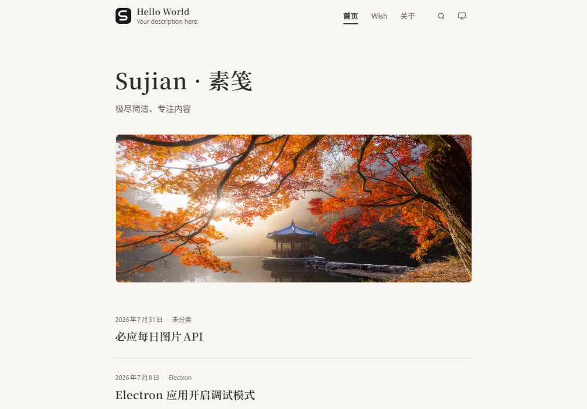

This simulated article uses the theme's production styles without creating a database record.
Long technical text
A long identifier: ResponsiveArticleLayoutRegressionWithUnbrokenTechnicalIdentifiersAndNoSpaces1234567890.
Scrollable code
server {
listen 993 ssl;
proxy_pass mail.example.test:993;
ssl_certificate /etc/certificates/ResponsiveArticleLayoutRegressionWithUnbrokenTechnicalIdentifiers/fullchain.pem;
proxy_ssl_server_name on;
}Wide table
| Service | Host | Port | Transport |
|---|---|---|---|
| Incoming mail | mail.example.test | 993 | TLS |
Image
